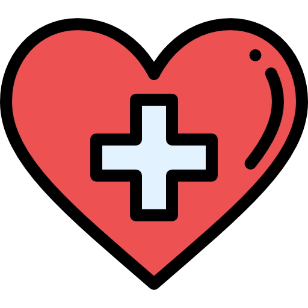
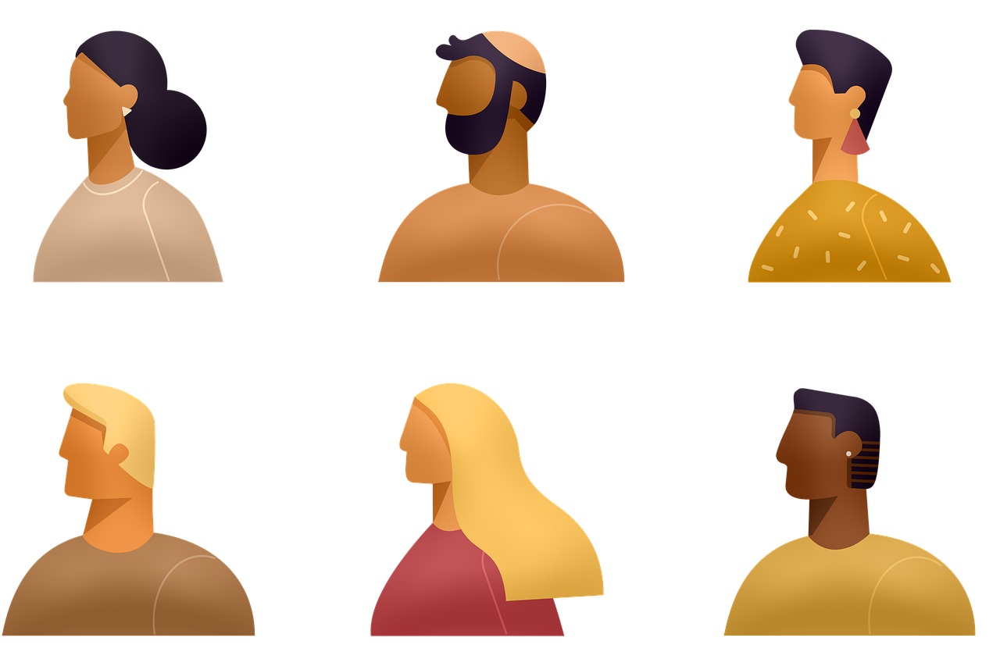
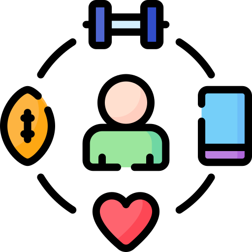

Factores de riesgos
Antecedentes familiares o procedencia
Alguien de su familia tiene enfermedad renal.
Tiene más de 50 años.
Problemas de salud
Tiene riesgo a padecer ERC, si padece de otros problemas de salud como:
- Diabetes
- Hipertensión arterial
- Enfermedad cardiovascular
- Obstrucción en el riñon o el uréter
- Obesidad
- Lupus
Origen Étnico
Es descendiente de afroamericanos, hispanos o nativos americanos; algunas etnias son más propensas a la diabetes y a la hipertensión arterial, que son factores de riesgo de la ERC.
Estilo de vida
Tiene riesgo a padecer ERC, si posee malos hábitos o un estilo de vida no saludable, tales como:
- Uso excesivo de medicamentos con ibuprofeno, naproxeno o acetaminofeno
- Consumo crónico de drogas ilícitas